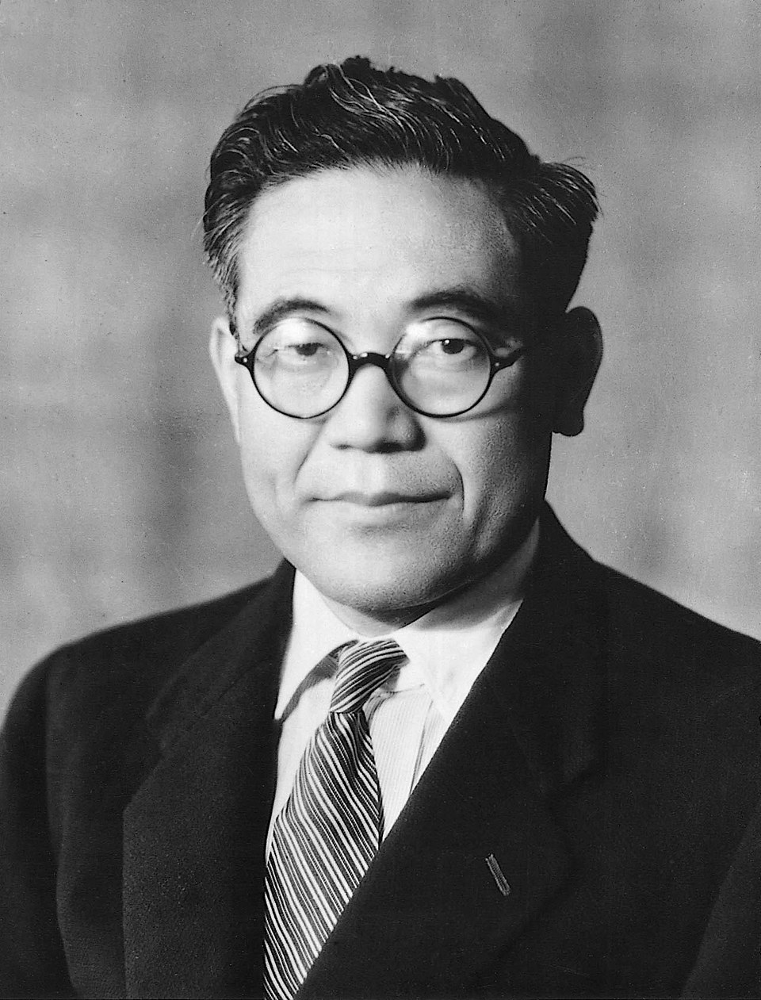

The Beginning
It all started with a simple idea and a passionate vision. A small team came together with dreams of creating something extraordinary that would change the industry forever.


A Story of Innovation, Passion, and Growth
It all started with a simple idea and a passionate vision. A small team came together with dreams of creating something extraordinary that would change the industry forever.
After years of dedication and hard work, we achieved our first major breakthrough. Our innovative approach caught the attention of industry leaders and early adopters who believed in our mission.
Growth brought new opportunities and challenges. We expanded our reach across borders, building partnerships and connections that would shape our future. Our community grew, and with it, our impact.
The digital revolution transformed everything. We embraced new technologies and reinvented our approach, staying ahead of the curve while maintaining our core values and commitment to excellence.
.jpeg)
.jpeg)
Our efforts were recognized on the world stage. Awards, accolades, and most importantly, the trust of millions of people who chose to be part of our journey. We had become more than just a company.
When the world faced unprecedented challenges, we adapted and evolved. Our resilience and flexibility allowed us to not just survive, but thrive, finding new ways to serve and connect with our community.
Today, we stand at the threshold of a new era. With decades of experience and a vision for the future, we continue to innovate, inspire, and make a difference. Our story is still being written, and the best chapters are yet to come.